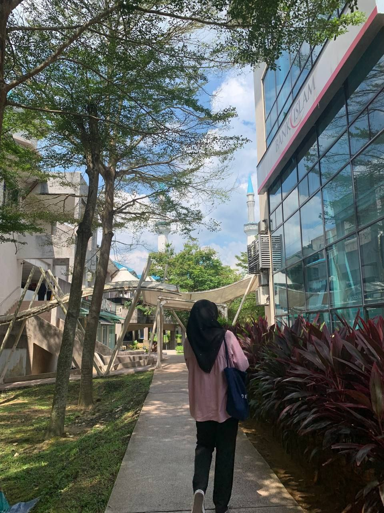

My name is Wan Nurin Irdina binti Wan Zamri. I was born at Kubang Kerian Hospital, Kelantan, on December 1, 2004. I am currently 20 years old. My hobby during my free time is reading novels, specifically Fixi novels. A "Fixi" novel is a purely fictional work, but its content can provoke thought and push the boundaries of human logic. This is why I chose it as my favorite novel.
The imaginative and out-of-the-box thinking presented in the story challenges conventional perceptions and encourages readers to view the world through a different lens.
Being a teacher was my first career aspiration, but my journey may have taken a different path now.
Currently, I am in my final semester at UiTM Rembau, and I hope this experience will help me become a useful person, contribute to my family, and excel as a student.
Not only that, I hope that before the end of my diploma journey, all my efforts and experiences will shape me into a better person and a professional when the time comes.
I will apply all this knowledge in my life, starting today and for the rest of my life. I am certain that knowledge is not easy to acquire, but with all my effort and determination, I will rise until the very end.
A little about myself: I am a former student of SMK Putrajaya Presint 11 (1). As an alumni, I believe that it is one of the best schools in terms of learning quality and is often praised by many people. Before completing my SPM, I took literature as one of my subjects and arts as a compulsory subject.
I completed my Sijil Pelajaran Malaysia (SPM) with excellent results. Additionally, I am the eldest of five siblings. I am the only daughter, with the rest being boys. Meanwhile, my second sibling is currently a student at Politeknik Jeli, Kelantan.
The third and fourth siblings are students at SMK Putrajaya Presint 11 (1). The youngest sibling is 4 years old this year.
The role of the eldest daughter can be quite challenging, but I believe that if raised properly, it will shape a good person.
🖋 EDUCATION📜


These two images represent my high school days. The first image was taken during the SPM (Malaysian Certificate of Education) era.
I recall that time as a period free from significant burdens, where our primary focus was on studying. Despite this, we still found joy in spending time with classmates, sharing laughter, and creating memorable moments together.
Let the experiences and lessons from the SPM era serve as a foundation for the invaluable knowledge imparted by our teachers. Without them, we would not be where we are today.
Like candles that burn themselves to illuminate others, teachers selflessly dedicate their time and energy to ensure their students succeed.
Cherish their sacrifices, for it is through their steadfast commitment that we have reached this achievement.
The second image captures the convocation ceremony with my batchmates after completing the SPM examinations.
It symbolizes the conclusion of a cherished chapter and the beginning of a new phase in life, filled with more challenges and responsibilities.
Until those moments arrive, it is essential to treasure the shared experiences and appreciate the people who have been a part of our journey.
Not only that, this is the first step towards embarking on a more challenging life and an opportunity to enhance your abilities to a higher level.
Strive to pursue education up to the highest levels, as knowledge is the most valuable asset in life.
This journey will not be easy, but every effort and sacrifice made will yield meaningful results.
Life Quotes
"I hope my situationship isn't a burden to anyone."
"I just miss the old days."
PSM, KPPIM